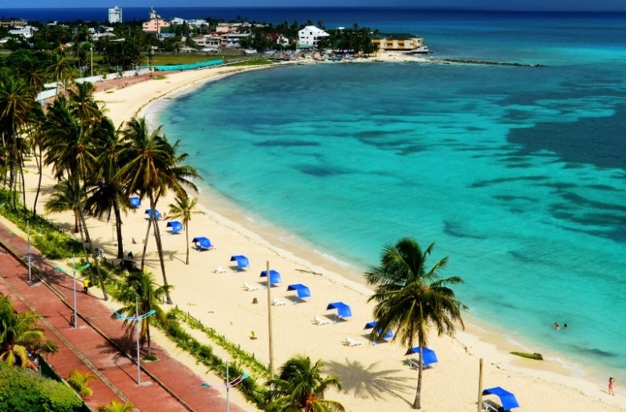
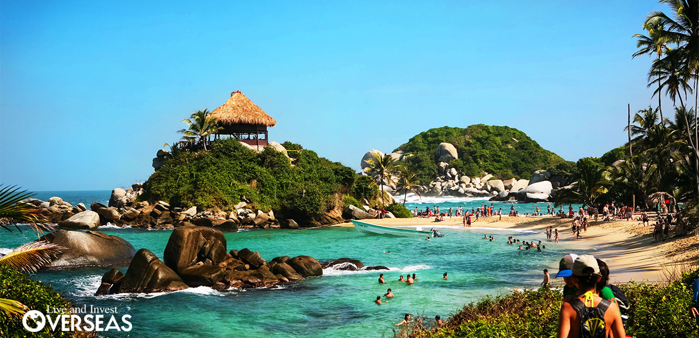
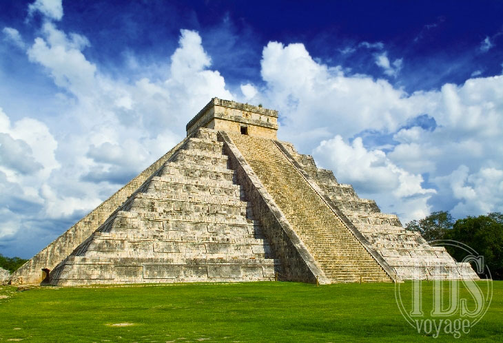
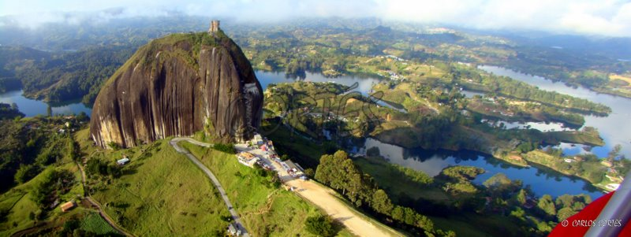
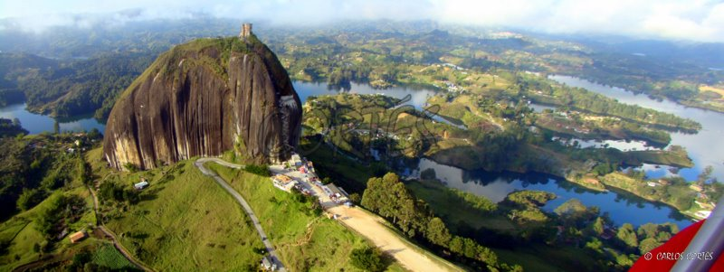
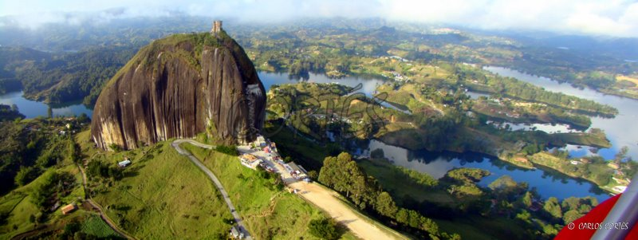
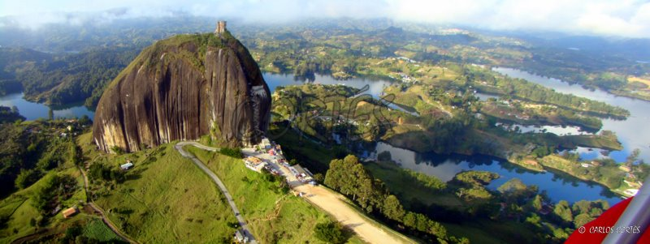

 



Río Secreto es un viaje a través de un museo de cristal, cuyas formaciones relatan la historia geológica de la tierra, y sin duda una experiencia transformadora de vida.
“Todo lo que aprendí en mi vida cobraba sentido solamente por atestiguar lo que tenía enfrente…” …Fueron las palabras de uno de los exploradores de Río Secreto mientras fluía por primera vez con las aguas cristalinas de un sitio milenario y sublime que poco a poco se develaba ante sus ojos. "Los grandes descubrimientos aún no terminan".
TESTIMONIALES
“NO HAY PALABRAS PARA DESCRIBIR ESTA MARAVILLA”
Un lugar natural a veinticinco metros bajo tierra que impacta la realidad rodeado en un ambiente con miles de años de vida.Espacio maravilloso donde las estalactitas centenarias te rozan la cabeza y la estalagmitas te marcan un camino incredible...
La Cultura Turística tiene su fundamento desde la perspectiva del desarrollo sustentable, concebido como la adecuada administración de los recursos (naturales, materiales, financieros y humanos), de manera que se logre la mayor satisfacción del visitante y el mayor beneficio para la comunidad receptora.